All in One View
Content from Introduction to Version Control
Last updated on 2026-01-14 | Edit this page
Overview
Questions
- How do you write a lesson using Markdown and sandpaper?
Objectives
- Explain how to use markdown with The Carpentries Workbench
- Demonstrate how to include pieces of code, figures, and nested challenge blocks
Introduction to Version Control
Content from Creating repositories using the web interface
Last updated on 2026-07-06 | Edit this page
Overview
Questions
- How do I create a repository on GitHub?
- How do I record (commit) changes?
- How do I browse changes?
- What repository insights and settings are available?
Objectives
- Create a new repository using the GitHub web interface
- Create and edit files directly on GitHub
- Write clear, descriptive commit messages
- Browse a repository’s commit history
- Use Markdown to format text
We will practice creating a new repository using the web interface, committing changes to it, browsing the changes, creating branches, and more. This is everything you need to do basic file management, though you’ll probably want something faster to use. Still, it can be good for quick edits and contributions.
Step 1: Create a repository with a README and a license
You start off by creating a repository from the web. In fact, we usually end up doing this from the web, no matter how you do your daily work. The important questions are who is the owner and what is the name of the repository.
Make sure that you are logged into GitHub.
To create a repository we either click the green button “New” (top left corner):

Or if you see your profile page, there is a “+” menu (top right corner):
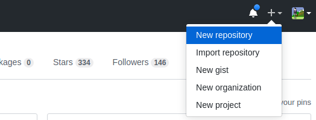
We then land at the following form. Please fill it out and set Initialize this repository with a README. Leave “Choose a License” as “None” for now — we will cover choosing a license in a later episode.
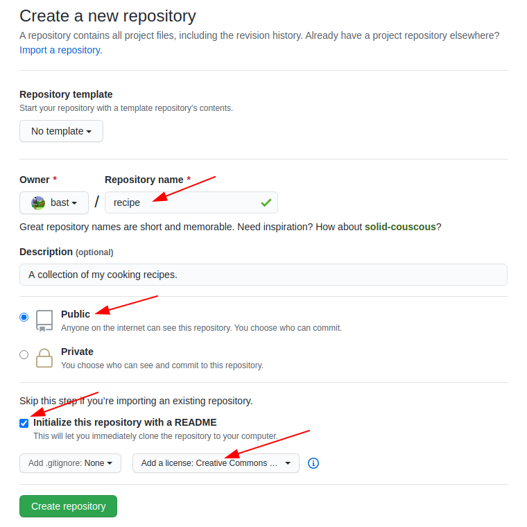
And now we have a repository with a README and LICENSE and one commit:
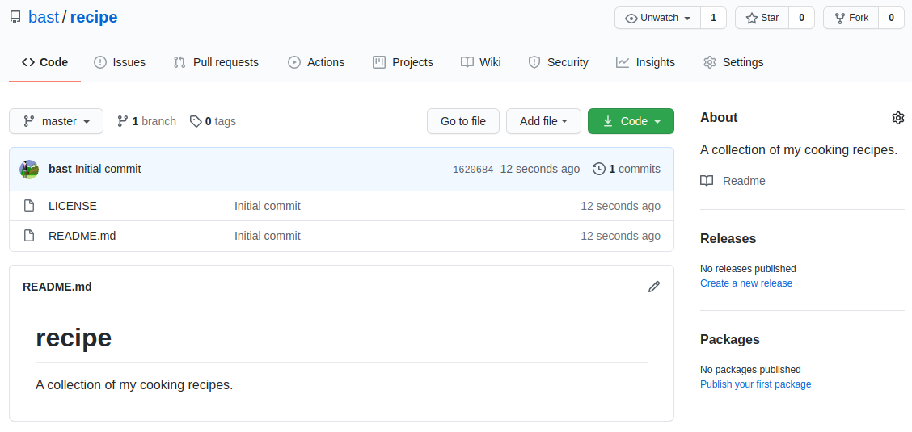
Step 2: Create a new file
We can easily add new files from the web interface.
Create a file, e.g. guacamole.md (the “md” ending
signals that this is in Markdown format):
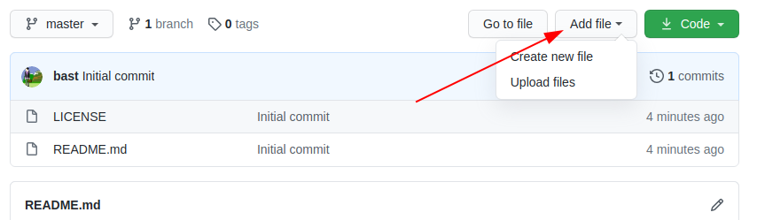
In the new file you can share your favorite cooking recipe (or something else). You can also copy-paste this as a starting point:
Ingredients:
- 2 avocados
- 1 lime
- 2 tsp salt
Instructions:
- cut and mash avocados
- chop onion
- squeeze lime
- add salt
- and mix well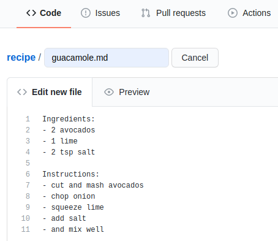
Then add a commit message and commit (save):
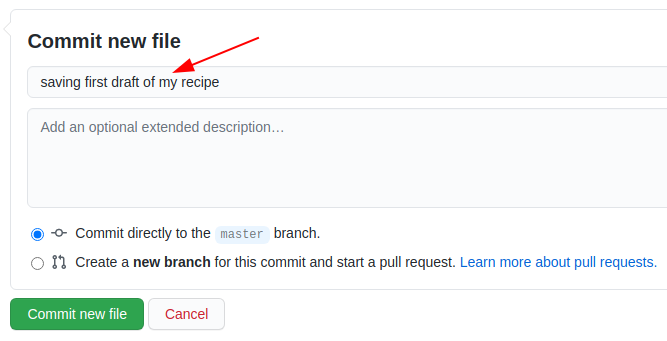
Discussion: Good commit messages
- What has changed is more useful than which file has changed
- Sometimes we forget to document why something was changed
- Many projects start out as projects “just for me” and end up to be successful projects that are developed by 50 people over decades.
- Write commit messages in English that will be understood 15 years from now by someone else than you.
- “My favourite Git commit”
- “On commit messages”
- “How to Write a Git Commit Message”
Step 3: Modify a file
We can also easily modify files from the web.
Now improve the recipe by adding an ingredient or an instruction step:
- Click on the file.
- Click the “pen” icon on top right (“edit this file”).
Make an improvement, write a commit message, commit:
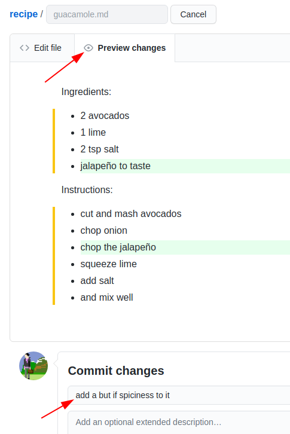
Once you have done that, browse your commits:
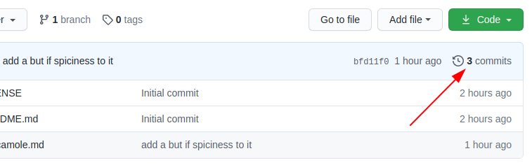
In this example, the commit history looked like:
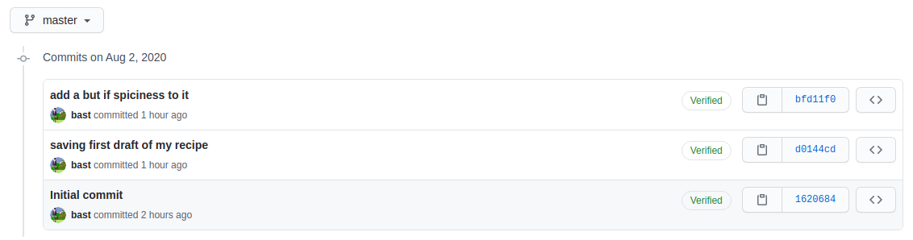
In this episode, we saw how we could do basic file management from the web. It’s not the best for making lots of new content, but it’s pretty convenient for quick edits. We will now see more advanced ways to do the same things - you can always check back on the web to see the effect.
Markdown
Markdown is a lightweight markup language for creating formatted text using a plain-text editor. John Gruber and Aaron Swartz created Markdown in 2004 (Wikipedia).
To practice using Markdown, and seeing how it is formatted, open up a new CodiMD document in your browser.
By default, the document will open in rendered view, but click on the middle split pane icon in the top left to show the Markdown and rendered views side-by-side.
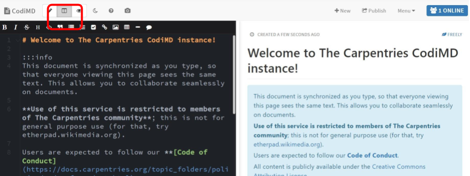
Now using the CodiMD interface, we will learn the following Markdown equivalents:
- Headers
- Bold
- Italics
- Bullets
- Ordered Lists
- Images
- Links
Exercise: Practice Markdown
Use as many of the Markdown skills you just learned to edit either the README.md or guacamole.md files.
- You can create, edit, and commit files directly from the GitHub web interface.
- Good commit messages explain what changed and why.
- Markdown is a lightweight formatting language used throughout GitHub.
Content from GitHub Issues and Pull Requests
Last updated on 2026-07-06 | Edit this page
Overview
Questions
- How do I submit small changes using pull requests?
- How do I propose and submit larger changes?
- How do I review and discuss changes?
Objectives
- File an issue on a repository
- Fork and edit a file on someone else’s repository
- Create a pull request to propose changes
- Review and respond to issues and pull requests
In this session we will learn how to contribute to repositories through the GitHub Issues feature, and then how to suggest changes to a public repository by proposing a Pull Request.
Through both of these processes, we will see how GitHub allows for social media-like discussions that then become part of your repository’s record.
Step 1: File an issue on your own repository
Back on your recipe repository from the previous lesson, click on the Issues tab (next to Code).
On your own repositories, Issues are good places to keep track of ideas that you intend to implement in the future.
Click the green “New issue” button to create a new issue.
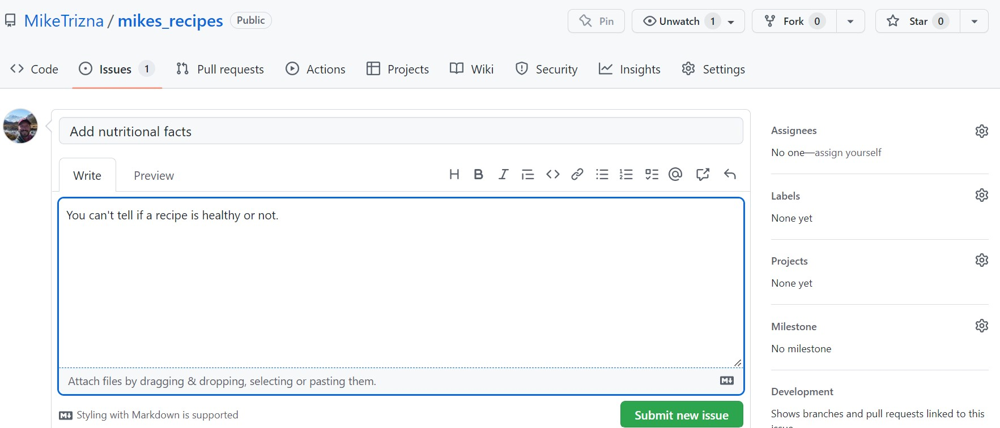
Add a title and description of an idea that you think would make your recipe repository better.
Notice that you can assign issues to specific people (when you are working with a team), and that you can categorize them with labels and milestones.
Step 2: File an issue on a colleague’s repository
More commonly, GitHub issues are used for users of a software or documentation site to point out bugs or make feature requests.
Exercise: File an issue
- In the workshop EtherPad, write your name, and add a link to your GitHub repository.
- Once all participants have added their repository link, go to the repository of the person above you, and add a bug report or feature request as a new Issue.
- If someone else has filed an issue in your repository, how were you alerted?
- Go find that issue that was filed in your repository, and respond to it.
Step 3: Make a pull request
As you can see, it is very easy for strangers on the Internet to suggest new features in open source software. However, the developers do not always have the bandwidth or ability to make the changes that you request. To be a good open source software citizen, you can make those changes yourself, and contribute them back to the project.
On the same repository you are in from the previous exercise (or in the instructor’s repository), navigate to either the README.md or guacamole.md files, and click on the pencil icon as if you were going to edit it.
What is different about this new screen than when you edited a file in your own repository?
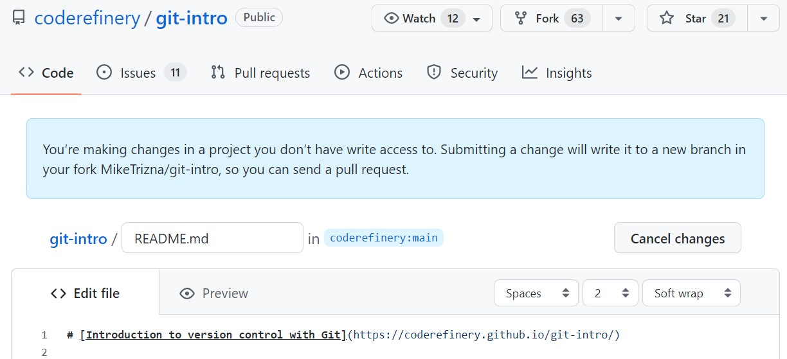
At the bottom, instead of “Commit changes”, there is a button for “Propose changes”.
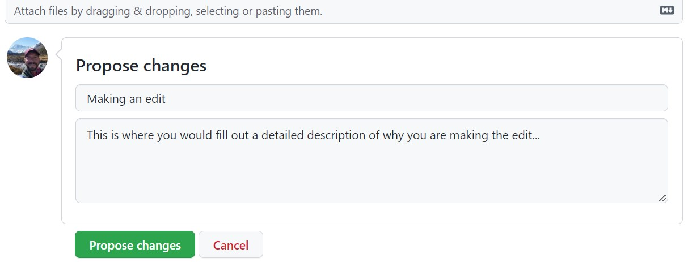
When you click on “Propose changes”, you should see a complicated page called “Compare Changes” that shows which files have changed and where.
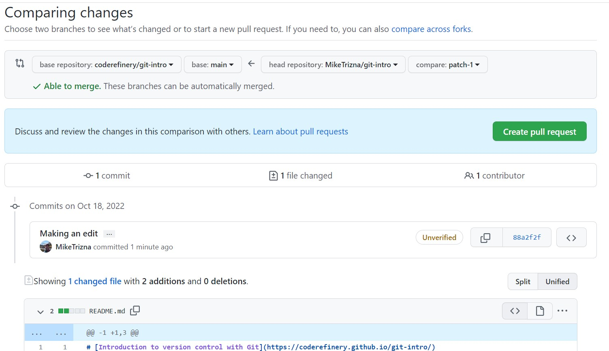
To actually make this suggested change, click on the green “Create Pull Request” button.
Don’t worry – this is only a request. Your colleague will still have an opportunity to accept or reject your changes – or start another discussion on the merits of your suggestion.
Now go back to your own repository, and see if a Pull Request has come in from someone else in the class. Feel free to respond politely to this request in whatever way you feel is appropriate.
- Issues are used to track bugs, ideas, and feature requests on a repository.
- Editing a file you don’t have write access to automatically creates a fork.
- A pull request proposes your changes back to the original repository, where the owner can review, discuss, and decide whether to accept them.
Content from Making changes with GitHub Desktop
Last updated on 2026-07-06 | Edit this page
Overview
Questions
- How do I clone a repository using GitHub Desktop?
- How do I commit and push changes using GitHub Desktop?
- What happens when conflicting changes are made in two places?
Objectives
- Clone an existing repository using GitHub Desktop
- Add, commit, and push changes using GitHub Desktop
- Recognize and resolve a merge conflict
Scenario: You’ve created a repository through the web interface, but now you have multiple files that you would like to add. Do you see an easy way to do this in the web interface?
Step 1: Open GitHub Desktop and Sign In
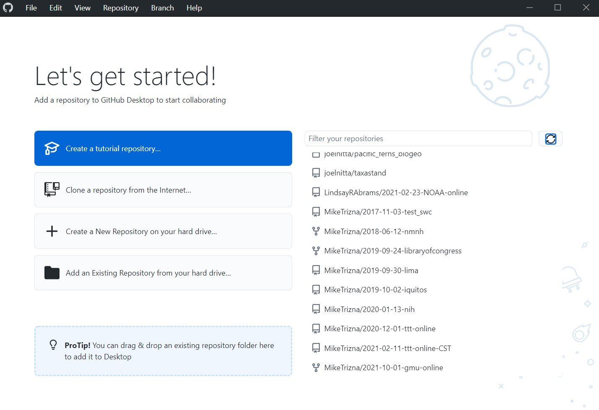
On Windows, go to File > Options. On Mac, go to GitHub Desktop > Preferences.
On the Accounts tab, click the Sign In button to sign in with your GitHub credentials in the browser.
Even though the friendly welcome screen has a big button to clone a repository, that welcome screen won’t always be there. The more consistent way to do this is to click on File > Clone repository.
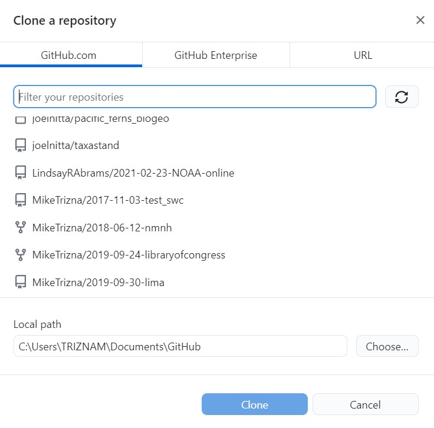
In the Github.com tab, all of your repositories will be listed. Scroll until you find the recipes repository you created in the previous lesson.
Now choose a folder on your computer where it makes sense to save those files. The default is probably fine, but remember where it is.
Click Clone to download the files … and all of the associated history to your computer.
Step 2: Add new files to the cloned directory
Download this zip file from https://github.com/MikeTrizna/github-without-command-line/raw/master/data/avocado_recipes.zip, and unzip to your Downloads folder (or anywhere else, temporarily). This .zip file contains 2 more avocado recipes in Markdown format, but you could imagine it containing several more.
Copy or move the new Markdown files to the directory that you cloned from GitHub.
Exercise
How has the Changes tab of the GitHub Desktop window updated?
Enter a commit message and description at the bottom of the Changes tab, and click the blue Commit button.
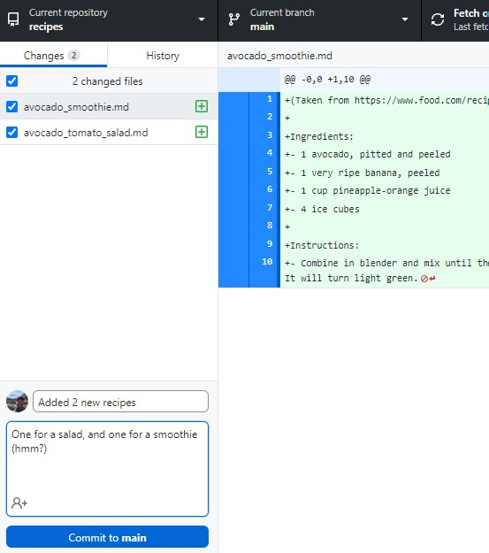
Now check out the History tab to see your latest commit.
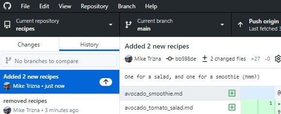
Browse to the repository on the GitHub website. Do you see the changes you just made?
Even though you have committed the changes to the Git history, they have not made their way to the GitHub repository. You will need to click to Push changes button in the top right to send them to GitHub. Do that now.
Now the changes should appear on GitHub.
Step 3: Make a conflicting change
But what happens if you (or a collaborator) make conflicting changes on the GitHub website and on your local copy?
Make a change in the README.md file of the web version to add internal links to the new recipes. On the web add the link to avocado_tomato_salad.md first, and then avocado_smoothie.md second.
It should look like this:
# Avocado Recipes
A collection of my avocado recipes
* [Salad](avocado_tomato_salad.md)
* [Smoothie](avocado_smoothie.md)
* [Guacamole](guacamole.md)Commit this change.
Now open the local copy of your README.md in a text editor, and add internal links to avocado_smoothie.md first, and then avocado_tomato_salad.md second. Commit the change.
It should look like this:
# Avocado Recipes
A collection of my avocado recipes
* [Smoothie](avocado_smoothie.md)
* [Salad](avocado_tomato_salad.md)
* [Guacamole](guacamole.md)Try to push the changes to GitHub. What new options appear in the place of “Push origin”?
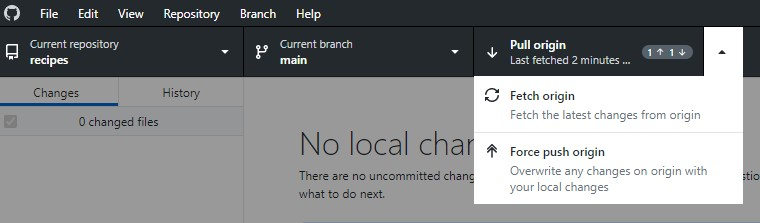
Click on “Pull origin”. You should get a warning like this:
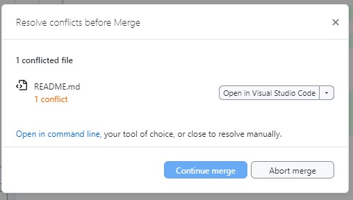
Go back to the local copy of the README.md file in a text editor. What has changed?
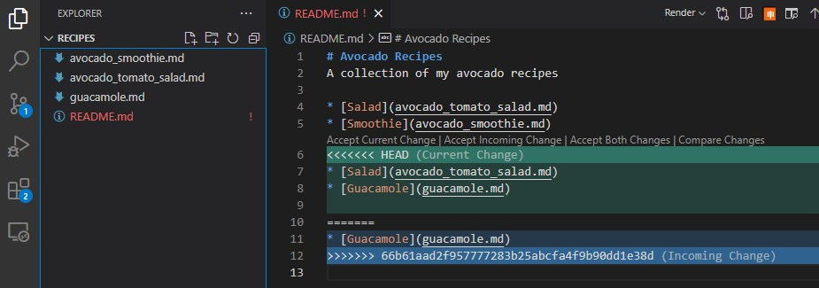
Now remove the conflicting text lines, and try pushing to GitHub again.
Resolving conflicts
Running into a git conflict is scary. If you feel like you are digging a deeper hole as you try to resolve the conflict (and the changes you are trying to make are minor), you can always remove the local copy of the repository and clone it from GitHub again from scratch.
- GitHub Desktop can clone, commit, and push changes without using the command line.
- Changes committed locally are not visible on GitHub until they are pushed.
- A conflict happens when the same lines of a file are changed in two places; Git needs your help to decide which version to keep.
Content from Making changes with VSCode
Last updated on 2026-01-14 | Edit this page
Overview
Questions
- Question 1
- Question 2
Objectives
- Objective 1
- Objective 2
Making changes with VS Code
Content from Hosting websites on GitHub Pages
Last updated on 2026-07-06 | Edit this page
Overview
Questions
- How do I serve a website using GitHub?
Objectives
- Enable GitHub Pages for a repository
- Watch GitHub build and deploy a page using GitHub Actions
- View the resulting website
You can host your personal homepage or group webpage or project website on GitHub using GitHub Pages.
GitLab and Bitbucket also offer a very similar solution.
Unless you need user authentication or a sophisticated database behind your website, GitHub Pages can be a very nice alternative to running your own web servers.
Step 0: Add links to your recipes in README.md
(This is from Step 3 of Making changes with GitHub Desktop, so you may have already done this)
Go back to your initial recipes repository, and edit your README.md file so that you have links to your separate recipe markdown files.
Here is sample text to include:
# Avocado Recipes
A collection of my avocado recipes
* [Smoothie](avocado_smoothie.md)
* [Guacamole](guacamole.md)
* [Salad](avocado_tomato_salad.md)
Commit these changes.
Step 1: Tell GitHub to make your pages
We need to tell GitHub how to make your repository into a website.
Click on the Settings gear icon up top, and then click on the Pages section on the left side panel.
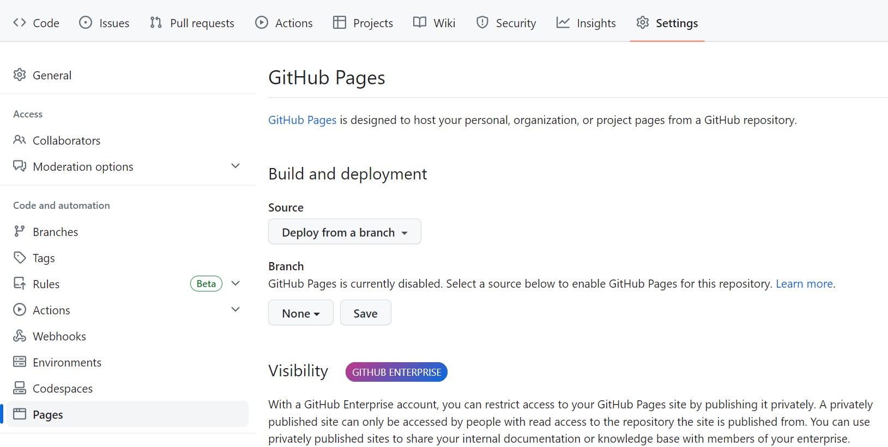
Click on the dropdown under Branch, and select “main” to tell GitHub to build a webpage from the “main” branch. Then make sure that “/root” is selected in the new dropdown that will populate. Click Save to make the web page build.
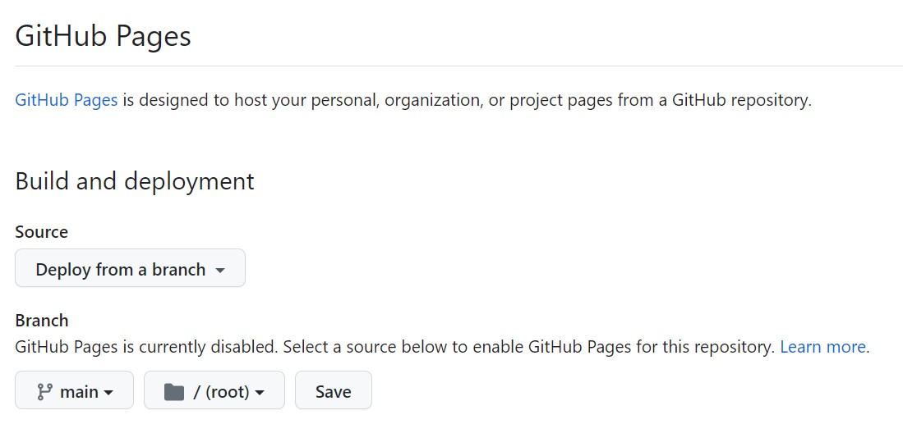
Step 2: Watch GitHub build your page live
Right after clicking Save, GitHub will start building your page using GitHub Actions (we could do a whole extra workshop on GitHub Actions).
Click on the Actions icon on the top menu to see that a “workflow” has been triggered called “pages build and deployment”.
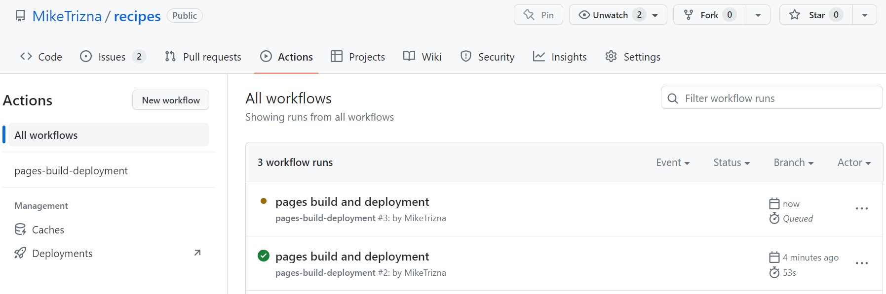
If you clicked on the Actions tab fast enough, the circle next to the workflow name should be brown or yellow.
Click on the “pages build and deployment” link. If the build was successful, all parts of the workflow should show a green circle. And most importantly, the “deploy” portion should have a link to your new website!
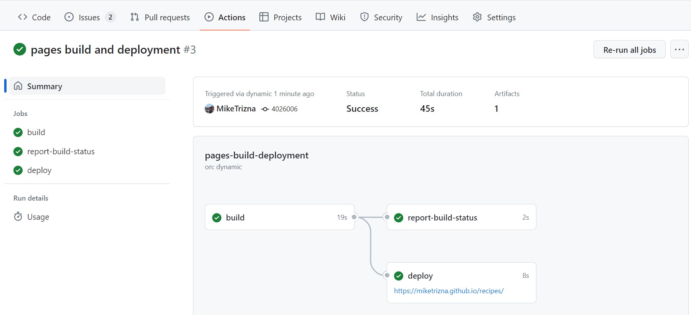
Click on that link (it should follow the pattern
https://[your username].github.io/recipes). You should see
a pretty basic webpage, but it’s completely built from the contents of
your GitHub repository!
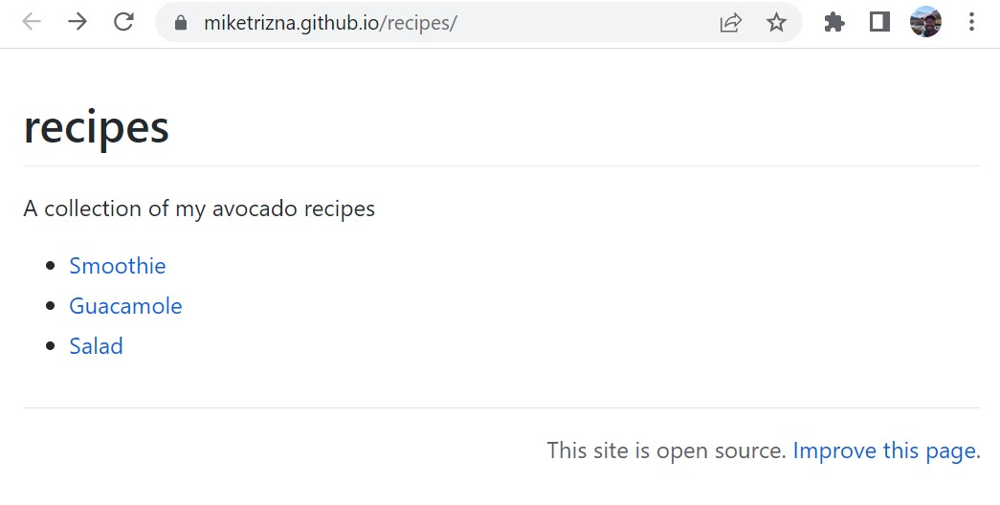
- GitHub Pages can turn the contents of a repository into a live website.
- Enabling Pages triggers a GitHub Actions workflow that builds and deploys the site.
- The deployed site’s URL follows the pattern
https://[your username].github.io/[repository name].